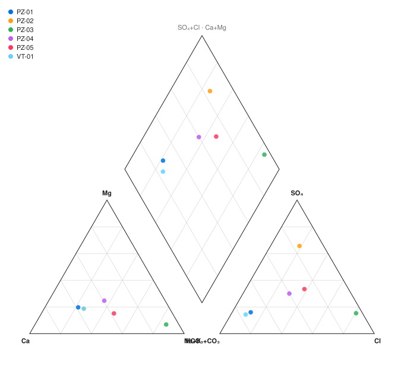
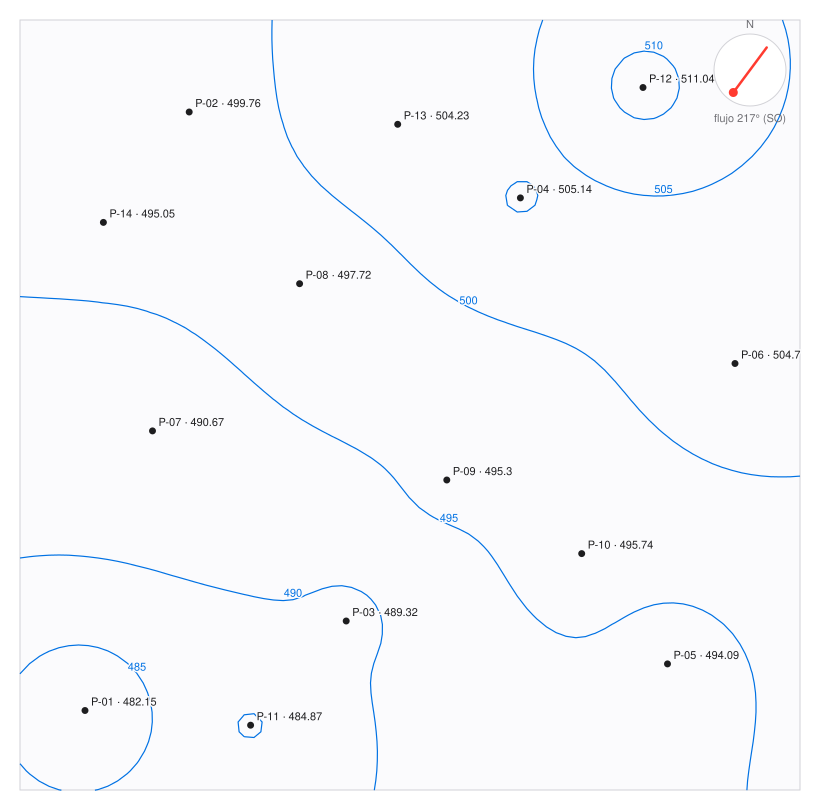

Agentes que conocen el oficio
Ensayos de bombeo, hidroquímica, salares, drenaje ácido, agua en la faena, modelos, alerta temprana, cierre y tramitación. Cada agente tiene su método de trabajo, sabe qué pedir y dice qué entrega.
Kit de agentes para Claude
Un equipo de agentes
para el agua subterránea.
13 agentes y 9 skills con cálculos probados para hidrogeología y geología ambiental en minería. Se instalan con una línea.
Con cariño para Patricia Guerrero, la mejor geóloga de Chile.
Qué trae
Ensayos de bombeo, hidroquímica, salares, drenaje ácido, agua en la faena, modelos, alerta temprana, cierre y tramitación. Cada agente tiene su método de trabajo, sabe qué pedir y dice qué entrega.
Doce scripts en Python sin dependencias. Cada resultado deja el comando que lo produjo, para que cualquiera lo repita.
Toda cifra sale de un archivo del proyecto o de una fuente abierta en la sesión. Lo que falta se marca como faltante, no se rellena.
Los agentes no pegan datos de clientes en buscadores, y una skill oculta nombres y coordenadas antes de trabajar. Aun así, confirma primero la política de tu empresa y del contrato.
Los agentes preparan y separan dato, cálculo e interpretación. La profesional a cargo revisa, decide y firma.
Las líneas de trabajo de una consultora de aguas para la gran minería, y los agentes que cubren cada una. Toca un agente para abrir su ficha.
Agentes
Elige una etapa o abre un agente para ver qué necesita, qué entrega y un pedido listo para copiar.
Skills
Los agentes piensan y redactan; las skills hacen las cuentas con scripts probados. Abre una para ver el resultado real con los datos de ejemplo.


Mapa
Agentes, skills, calculadoras, programas y dónde se instala cada cosa. Cambia la vista, busca, filtra o sigue una ruta de trabajo paso a paso.
Calculadoras
Las mismas fórmulas de las skills, en el navegador. Lo que escribes no sale de tu equipo.
Manual
Responde dos preguntas y el manual se arma para tu caso. Marca cada paso al terminarlo: tu avance queda guardado en este navegador.
Con cariño para Patricia Guerrero, la mejor geóloga de Chile.
Los tropiezos más comunes al instalar y cómo salir de cada uno.
Elige lo que tienes que hacer y sigue los pasos. Cada uno trae el pedido exacto para copiar.
Hermes
Hermes Agent es un asistente de código abierto de Nous Research. No reemplaza a Claude: puede usar a Claude como cerebro y sumar cosas que Claude no hace por sí solo.
Si no necesitas un asistente en WhatsApp o Telegram prendido todo el día, con Claude basta.
Según la documentación de Hermes al 11 de noviembre de 2026. Los planes cambian: confírmalo antes de pagar.
Marca lo que necesitas.
| Nombre | Qué es |
|---|---|
| Hermes Agent | El asistente de Nous Research. Se usa por terminal, por chat o con su app de escritorio. |
| Hermes Desktop | La app de escritorio oficial del mismo Hermes Agent, para Windows, Mac y Linux. |
| Hermes 3 y Hermes 4 | Modelos de lenguaje de Nous Research. No son una app. |
| OpenClaw | Otro asistente que funciona por WhatsApp y Telegram. Es la competencia directa de Hermes. |
| Apps llamadas «Hermes AI» | Aplicaciones de terceros en las tiendas. La oficial está en hermes-agent.nousresearch.com. |
Fuentes: sitio oficial de Hermes Agent, documentación de proveedores, documentación de skills.
Preguntas
El kit es gratuito y de código abierto, con licencia MIT. Necesitas un plan de Claude que incluya Claude Code o Cowork. Hermes Agent también es gratuito, pero el modelo que use se paga aparte.
Eso lo define tu empresa y el contrato del proyecto, no el kit. Con clientes de la gran minería suele haber cláusulas de confidencialidad estrictas: antes de subir información a cualquier herramienta de IA, confirma por escrito qué permite la política de tu empresa.
Mientras tanto hay tres caminos seguros: practicar con los datos de ejemplo, que son ficticios; trabajar con informes y datos que ya son públicos; y usar la skill anonimizar-datos, que cambia nombres por códigos y traslada las coordenadas antes de trabajar, con la clave guardada solo en tu equipo. Anonimizar reduce el riesgo, pero no reemplaza la autorización. Las calculadoras de esta página corren en tu navegador y no envían nada.
Los cálculos están verificados con 156 pruebas automáticas contra valores conocidos, y puedes repetirlos con el mismo comando. La interpretación de los agentes es un borrador experto y puede equivocarse: revísala como revisarías el trabajo de un colega nuevo y pásala por hidro-revisor.
Sí. Los métodos son generales. La búsqueda de normativa parte por Chile; para otro país, indícalo en el archivo CLAUDE.md del proyecto y hidro-normativa buscará las fuentes oficiales de ese país.
No. Le pides las cosas a Claude en español y él corre los scripts. Solo necesitas tener Python instalado; el instalador te avisa si falta.
Para actualizar, corre de nuevo el instalador: reemplaza lo anterior y guarda respaldo de lo que hayas modificado. Para quitarlo:
No reemplaza el criterio profesional, no firma informes y no garantiza que una norma esté vigente: la busca y la cita para que tú la confirmes. Los scripts cubren Theis y Cooper-Jacob, no todos los métodos de ensayo; para Hantush, Neuman o slug tests el agente escribe el cálculo aparte y lo avisa. El kit escribe los archivos de entrada de PHREEQC, pero no trae ni ejecuta PHREEQC, MODFLOW ni otros programas de modelación: esos se instalan aparte.